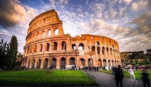
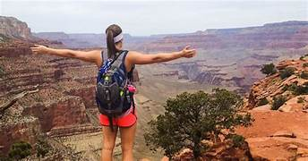

Tour_eiffel
Monument emblématique de Paris et de la France.
Construit en 1889 pour l'Exposition universelle.
Mesure environ 324 mètres de hauteur.
Offrant des vues panoramiques sur la ville de Paris.
Dispose de plusieurs niveaux accessibles aux visiteurs.!
Lire la suite

Le Colisé
Amphithéâtre romain antique, inauguré en 80 après J.-C.
Pouvait accueillir jusqu'à 50 000 spectateurs.
Utilisé pour les combats de gladiateurs et autres spectacles publics.
Représente un chef-d'œuvre de l'ingénierie romaine.
Site inscrit au patrimoine mondial de l'UNESCO.
Lire la suite

Le grand Canyon
Gorge immense sculptée par le fleuve Colorado.
Longueur de 446 km, largeur allant jusqu'à 29 km, et profondeur de plus de 1 800 mètres.
Offre des paysages spectaculaires avec des formations rocheuses colorées.
Activités populaires : randonnées, rafting, visites en hélicoptère.
Site inscrit au patrimoine mondial de l'UNESCO.
Lire la suite